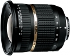

器材库 > APS画幅镜头 > SP AF 10-24/3.5-4.5 Di II LD Asp. IF B001

详细规格
镜头类型
广角变焦镜头
发布日期
2008-01-31
厂家推荐价格
71,400.00 （日元）
焦距
10mm-24mm
等效35mm画幅焦距
16mm-37mm
最大光圈
f/3.5-f/4.5
最小光圈
f/22
视角（对角）
108.7-60.3
镜头结构
12片/9组
非球面镜片
4片
低/超低色散镜片
2片
光圈叶片
7片
最近对焦距离
24cm
最大放大倍率
0.20倍
驱动马达
AF马达
滤镜口径
77mm
镜头卡口
Canon EF, Minolta/Konica-Minolta/Sony AF, Nikon AF, Pentax AF
防抖
否
颜色
黑色
尺寸
83.2×86.5mm
重量
406g
附件
花形遮光罩
备注
外观尺寸、重量数据和内置AF马达均为尼康卡口；产品代码：B001
shengxcx2014-01-18 17:013.83 分
操作性 4.00耐用性 4.00性价比 3.50解像力 3.50色彩还原 4.00机械结构 4.00
yani9132013-08-20 09:004.83 分
操作性 5.00耐用性 5.00性价比 5.00解像力 5.00色彩还原 4.50机械结构 4.50
tennnnnnn2012-11-19 10:105 分
操作性 5.00耐用性 5.00性价比 5.00解像力 5.00色彩还原 5.00机械结构 5.00
大汗0012011-08-27 00:254.83 分
操作性 5.00耐用性 5.00性价比 4.50解像力 5.00色彩还原 5.00机械结构 4.50
大汗0012011-08-27 00:22
龙生风云2011-05-25 16:25
jackieyanni2011-03-04 09:284.17 分
操作性 4.50耐用性 4.00性价比 4.00解像力 4.50色彩还原 4.00机械结构 4.00
迅2010-09-02 15:494.5 分
操作性 5.00耐用性 4.00性价比 5.00解像力 4.00色彩还原 5.00机械结构 4.00
shatgu2010-03-31 11:543.5 分
操作性 3.50耐用性 3.50性价比 4.50解像力 2.50色彩还原 4.00机械结构 3.00
squreer2010-03-06 23:394.33 分
操作性 4.50耐用性 4.00性价比 5.00解像力 4.50色彩还原 4.00机械结构 4.00
richardisme2010-01-24 02:354.58 分
操作性 4.50耐用性 5.00性价比 5.00解像力 4.50色彩还原 4.50机械结构 4.00
lingchengming1232009-06-23 12:284.33 分
操作性 4.00耐用性 4.50性价比 4.00解像力 4.50色彩还原 4.50机械结构 4.50
觅真2009-04-14 00:154.58 分
操作性 4.50耐用性 4.00性价比 5.00解像力 5.00色彩还原 5.00机械结构 4.00
糖我不爱吃2009-03-10 23:514.25 分
操作性 4.00耐用性 4.00性价比 5.00解像力 4.50色彩还原 4.00机械结构 4.00
Laqianbei2008-12-15 18:163.42 分
操作性 3.00耐用性 3.00性价比 4.00解像力 3.50色彩还原 4.00机械结构 3.00
产品图 / 样片
外观图